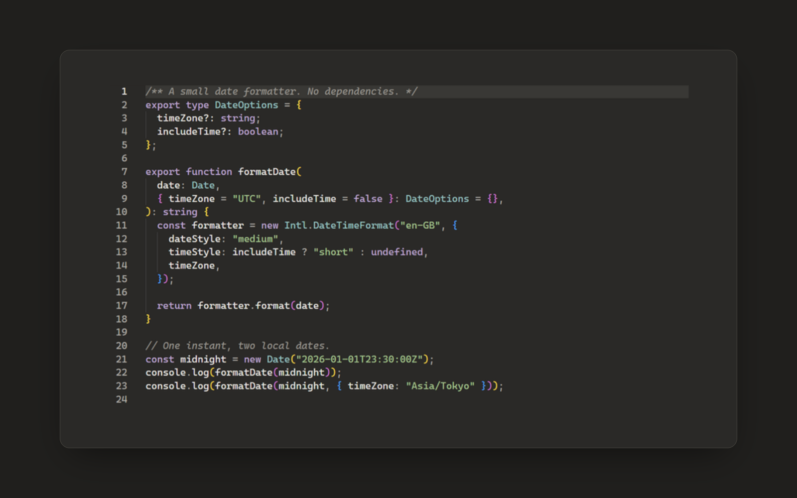
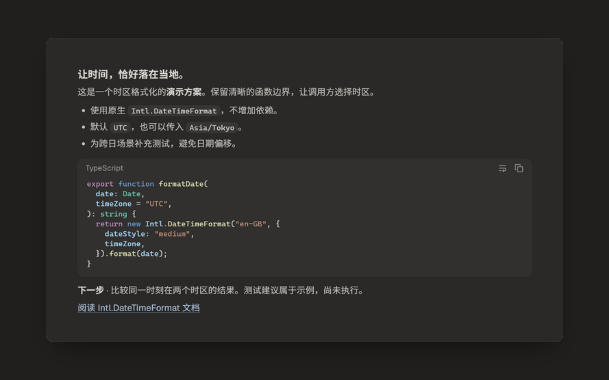
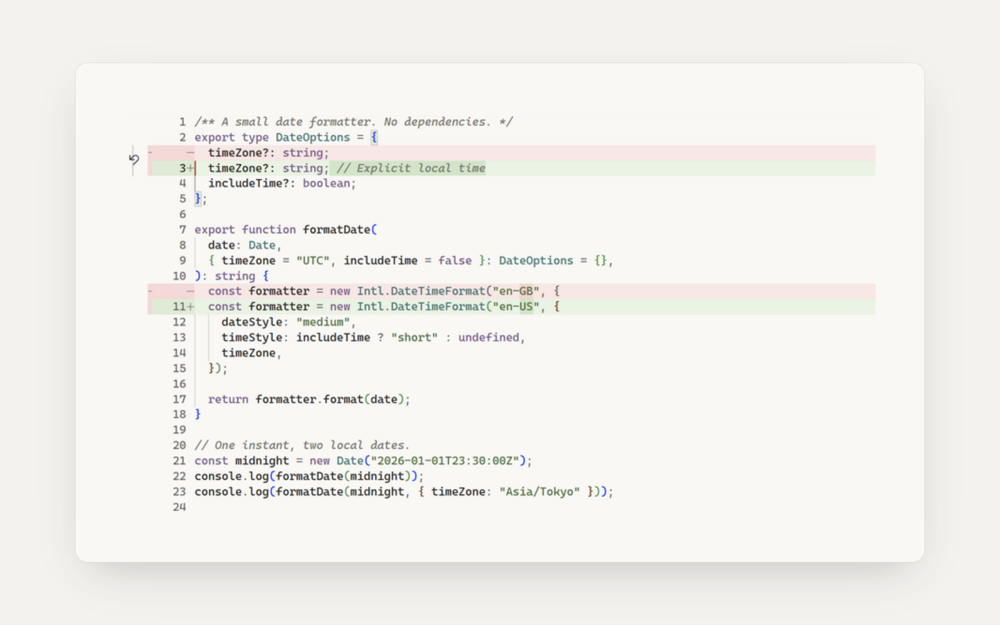
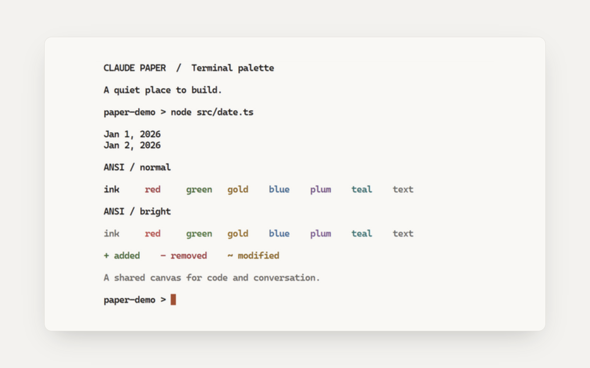

01
让代码，有清晰的语气。
紫色关键字、绿色字符串、青色类型。编辑器与聊天共用暖色画布，切换工作时保持熟悉的观感。
Plum keywords. Green strings. A shared canvas.

CLAUDE-INSPIRED · COMMUNITY MADE
One paper, two lights.
白天是一张暖纸，夜晚是一盏柔光。
为 Orca 的聊天、代码与终端，换上连贯的暖色调。


同一段公开演示回复 · Orca 原生界面局部截图 · 支持方向键调整
01 / THE PALETTE
暖白与炭灰铺底，用细小的明度差区分表面。陶土标记动作，蓝色留给链接。
02 / IN THE WORKFLOW
展示图均来自 Orca 中的公开演示内容。
点击图片，放大查看细节。
紫色关键字、绿色字符串、青色类型。编辑器与聊天共用暖色画布，切换工作时保持熟悉的观感。
Plum keywords. Green strings. A shared canvas.

绿色新增，玫瑰色删除。浅色差异背景与行内高亮分工，让小改动也能被找到。
Small changes, clearly visible.

两套独立终端配色，normal 与 bright ANSI 均有对应颜色。


画面采用原生截图局部，经裁切、等比例放大与展示框排版；未重绘界面或替换截图中文字。演示字体、布局和代码块样式由 Orca 与个人设置决定。
orca plugin install GongXLiang/Claude-paper --json浅色主题选「Claude Paper · 暖纸」，深色主题选「Claude Paper · 暖夜」。终端主题分别选择同名配色。
关闭「匹配终端外观」可让聊天跟随应用主题；开启时，请同时选择对应终端配色。
FAMILIAR, BY DESIGN
Claude Paper 通过 Orca 的公开主题接口调整颜色。布局、字体、圆角、动效与工具卡片仍由 Orca 决定。插件仅包含主题数据，无运行脚本、网络请求或额外能力权限。